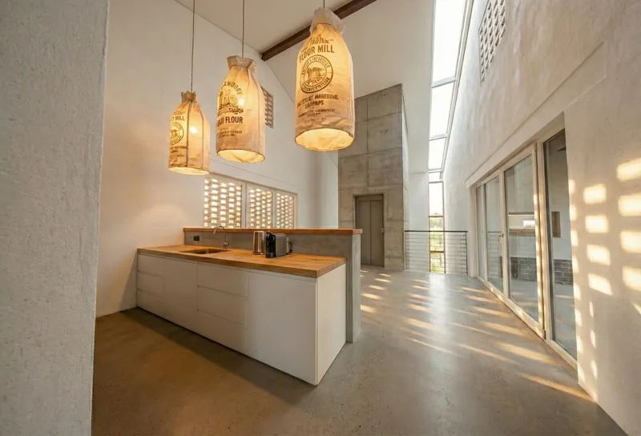

Práce blízko domova
Nové firmy znamenají práci přímo v Kosticích. Méně dojíždění, víc času doma.

Bývalé družstvo za obcí se mění. Vznikne tu park s vodou, místo na procházky, kavárna v sýpce a nové haly pro menší firmy. Tady najdete, co to znamená pro vás.
Za obcí vznikne park. S vodou, stromy, lavičkami a vyhlídkou na Pálavu.
Areálem se dá projít. Pěšky i na kole. Nové cesty propojí obec, areál a okolní krajinu.
Sýpka zůstane. Bude v ní kavárna, dílny a sál pro akce. Je to jediná stará budova, která se nezbourá.
Žádný těžký průmysl. Územní plán tu počítá jen s lehkou výrobou a službami.

Největší nádrž na dešťovou vodu bude většinu roku suchým parkem přímo u domů. Z vyhlídky uvidíte až na Pálavu.

Velké stromy, stín, lavičky z cihel ze starého družstva a místo na sport. Na posezení po práci i o víkendu.

V přízemí kavárna a dílny, nahoře sál na přednášky, výstavy a setkání a vyhlídková galerie.
Obrázky jsou vizualizace. Ukazují, jak by to mělo vypadat, až bude hotovo.
Nové firmy znamenají práci přímo v Kosticích. Méně dojíždění, víc času doma.
Dešťová voda z areálu nebude odtékat pryč. Vsákne se, ochladí okolí a v suchu poslouží na zálivku.
Obec připravuje komunitní energetickou síť KES Kostice. Cílem je využívat místní zdroje energie a ztrácet jí co nejméně.
Doplní obec Jak se příjmy ze zóny promítnou do poplatku za odpad: o kolik a od kdy.
Cesty, vodovod, kanalizace, osvětlení a elektřina jsou už hotové (2026). Stavební povolení se čeká do konce roku 2027 a stavět se má začít v roce 2028. Nejdřív přijde na řadu sýpka a prvních šest hal.
Doplní obec Zůstane v provozu? Kde bude a v jakých hodinách?
Doplní obec Kudy pojedou auta při stavbě a potom při provozu, kdy se bude stavět a jaká omezení čekat.
Tak se s tím počítá. Náměstíčko, park a cesty jsou navržené jako veřejný prostor pro lidi z obce, ne jen pro zaměstnance firem.
Územní plán tu počítá jen s lehkou výrobou, tedy s menšími provozy, dílnami, technologiemi a službami. Těžký průmysl sem nepatří.
Obec už vybudovala cesty a sítě s podporou dotace Ministerstva průmyslu a obchodu. Na stavbu hal hledá strategického partnera, se kterým projekt dokončí.
Ano, při akcích. V sýpce už proběhly výstavy Nezaznamenané příběhy a Nový dech. O dalších akcích píšeme v Aktualitách.